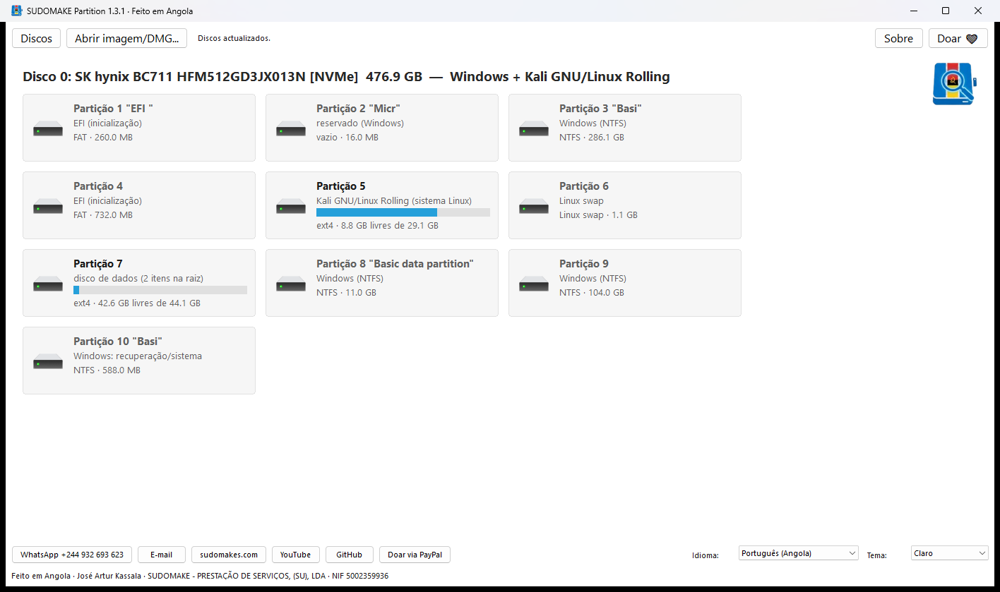
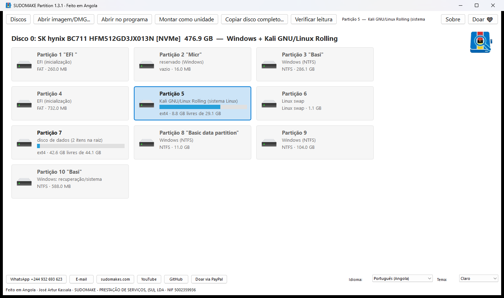
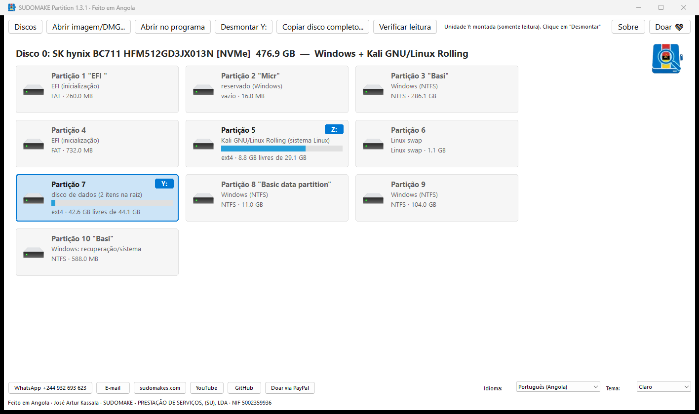
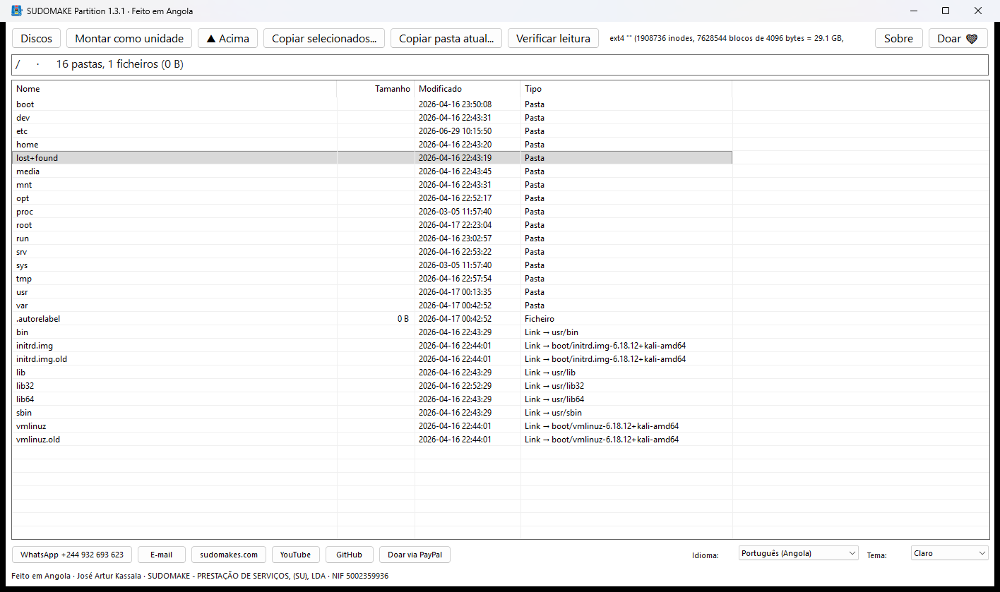
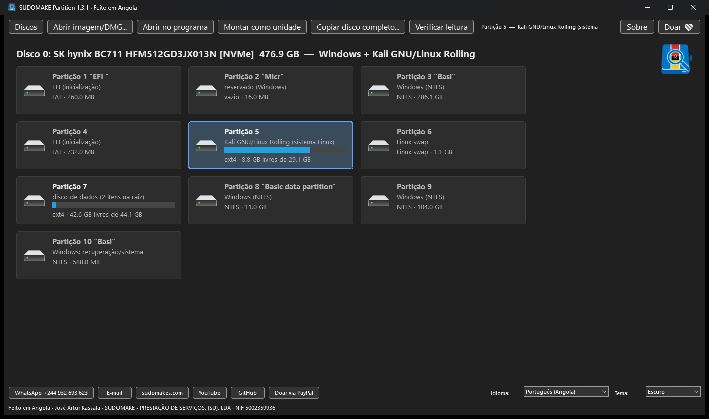
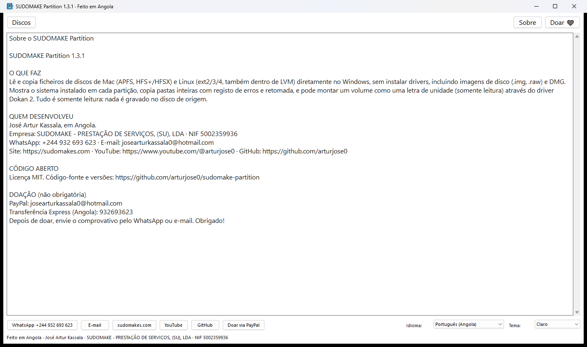
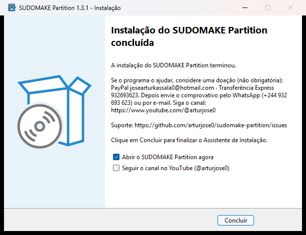

O Windows não abre discos de Mac (APFS, HFS+) nem de Linux (ext4, LVM). O SUDOMAKE Partition abre: mostra as partições em azulejos, diz que sistema está em cada uma, e deixa-o copiar os ficheiros ou montar o disco como uma letra de unidade. Grátis, de código aberto e somente leitura: nada é alterado no disco original.

Serve para o disco interno retirado de um MacBook, iMac ou PC com Ubuntu, Debian, Kali ou Fedora, para discos externos e pen drives formatados no Mac ou no Linux, e para imagens de disco.
APFS (macOS 10.13 até ao mais recente, todos os volumes, ficheiros comprimidos) e HFS+/HFSX (Mac OS Extended, Time Machine).
ext4, ext3 e ext2, também dentro de volumes LVM. Ubuntu, Debian, Kali, Mint, Fedora, RHEL…
DMG (zlib, bzip2, ADC, LZFSE, LZMA), .img, .raw e .dd, com tabelas GPT, MBR e Apple Partition Map.
Cada partição mostra o que tem: "Ubuntu 22.04", "Kali Linux", "macOS 12.5", "Windows", "EFI", "swap", "Time Machine"…
O volume vira uma letra (Z:), somente leitura, visível no Explorador e em qualquer programa. Vários discos ao mesmo tempo.
Copie pastas ou o disco completo com progresso, retomada e registo de erros. Antes de copiar um disco inteiro, verifica se há espaço no destino.
Nunca escreve, repara nem altera o disco de origem. Não precisa de senha para discos comuns (só os cifrados ficam de fora).
Português (Angola), English, Français, Español. Tema claro, escuro ou do sistema. Os discos ligados ou removidos aparecem sozinhos.
Imagens da versão actual. Clique para ampliar.






Descarregue o instalador e siga o assistente. Se o driver Dokan (só para montar unidades) faltar, o instalador trata disso.
Ligue o disco por USB ou adaptador e abra o programa. Aceite o pedido de Administrador: o Windows exige-o para ler discos físicos.
Os ficheiros pessoais estão em /Users/nome (Mac, volume "Macintosh HD - Data") ou /home/nome (Linux).
Abrir no programa para navegar e copiar; Montar como unidade para usar o disco em qualquer programa; Copiar disco completo para levar tudo para outro disco.
Lista obtida em tempo real do GitHub. Toda a ajuda é bem-vinda: relatos de teste com discos reais, traduções, documentação e código.
O SUDOMAKE Partition é gratuito e vai continuar a ser. Se ele o ajudou a recuperar os seus ficheiros, uma doação de qualquer valor ajuda a manter e melhorar o projecto. Não é obrigatória.
Como doar
PayPal: josearturkassala0@hotmail.com
Doar via PayPal
Transferência Express (Angola): 932693623
Depois de doar, envie o comprovativo pelo WhatsApp ou e-mail para podermos agradecer e, se quiser, incluir o seu nome na lista de apoiantes.
O SUDOMAKE Partition foi criado em Angola por José Artur Kassala, através da sua empresa SUDOMAKE - PRESTAÇÃO DE SERVIÇOS, (SU), LDA. Nasceu de uma necessidade real: recuperar ficheiros de discos de Mac e de Linux usando apenas um computador com Windows, sem pagar por programas fechados.
É escrito em Rust, lê os sistemas de ficheiros directamente (sem drivers), e foi validado byte a byte contra o 7-Zip e contra discos reais. O código é aberto sob licença MIT: qualquer pessoa pode usar, estudar, melhorar e distribuir.